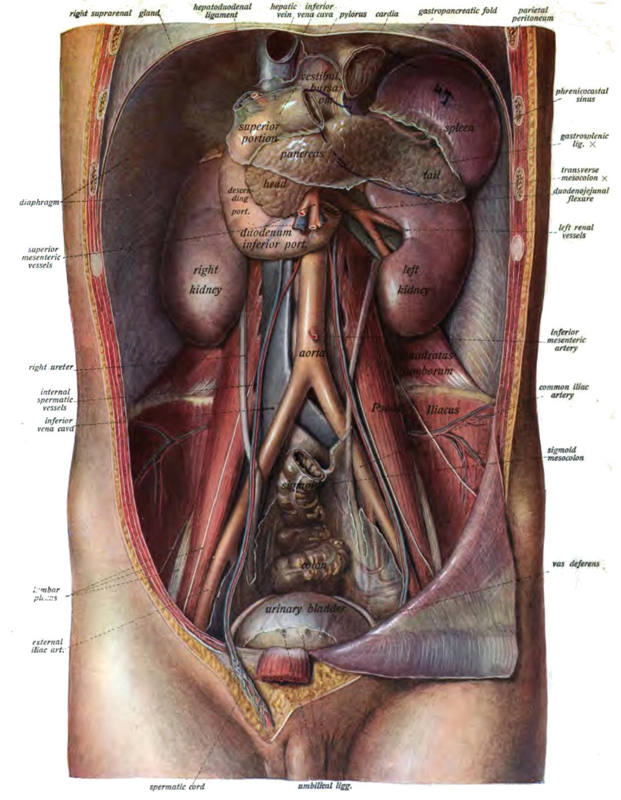
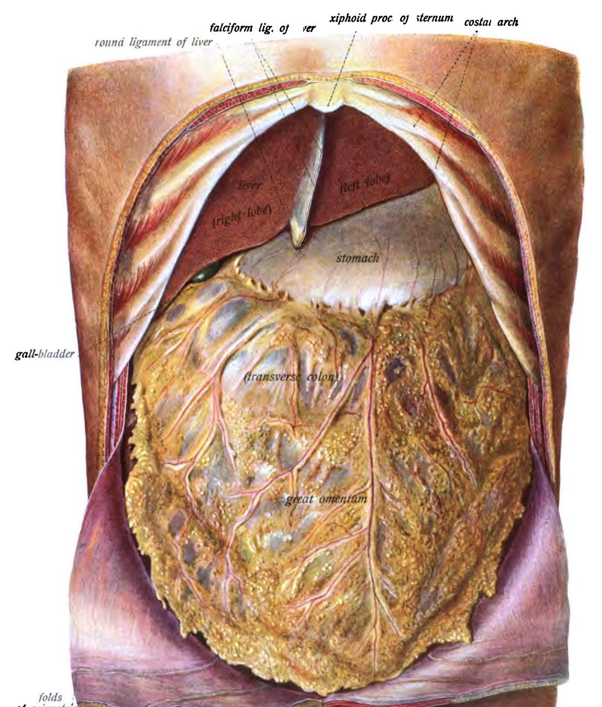
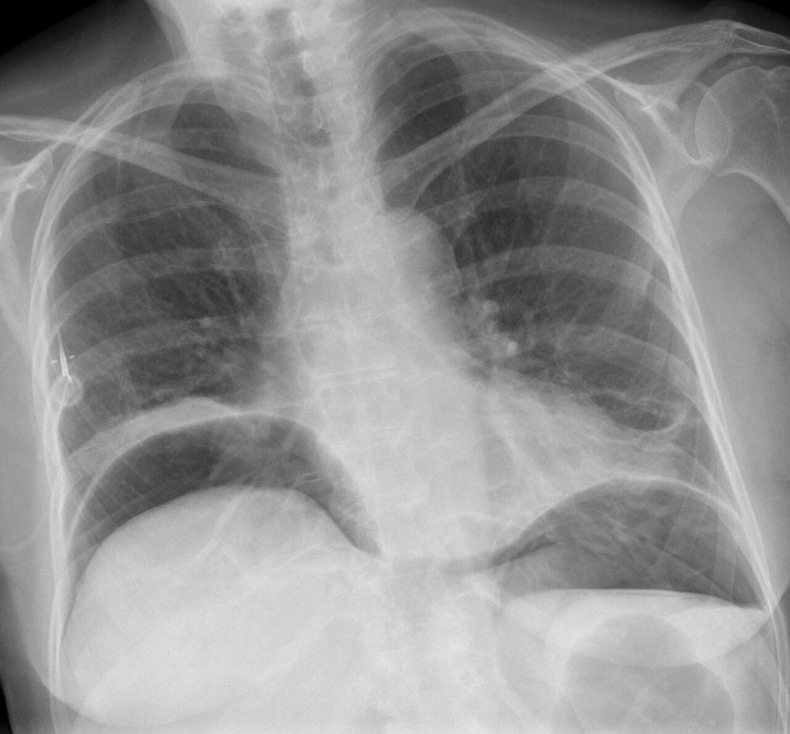
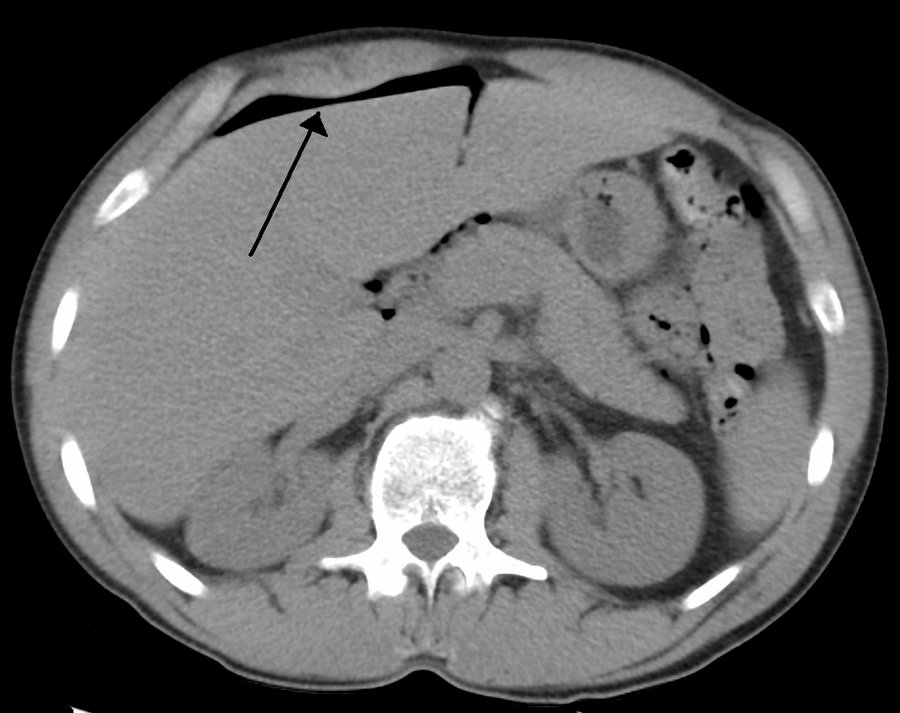

בטן חריפה
גישה שיטתית לחולה עם כאב בטן חריף: אנמנזה, בדיקה, מעבדה, הדמיה, הכנה לניתוח ומתי אפשר בלי ניתוח
בסוף המפגש תדעו
- להסביר את ההבדל בין כאב ויסצרלי לכאב פריאטלי ולהכיר כאב מושלך
- לבנות אבחנה מבדלת רחבה של בטן חריפה, כולל סיבות לא כירורגיות
- לקחת אנמנזה ולבצע בדיקה גופנית מלאה ולזהות סימני פריטוניטיס
- לבחור בדיקות מעבדה והדמיה מתאימות ולדעת מה כל אחת נותנת
- להכין חולה לניתוח דחוף ולהכיר את מקומו של טיפול לא ניתוחי
- להכיר את האוכלוסיות המיוחדות: הריון, קשישים, מדוכאי חיסון וחולים קשים
מה זה ״בטן חריפה״?
- לא אבחנה: אוסף של תסמינים, ממצאים ובירור שמרמזים על תהליך חריף בבטן (או מחוצה לה) שלעיתים קרובות מחייב ניתוח
- חריף: הגבול המקובל, השרירותי, הוא כאב של עד שבוע
- ארבעה מנגנונים: דלקת, חסימה, ניקוב ואיסכמיה
- תוך-צפקי: stomach, small bowel, transverse colon, liver, spleen, appendix
- רטרופריטונאלי: kidneys, pancreas, ascending & descending colon וכלי הדם הגדולים
- אספקת הדם: ה-aorta מתפצל ל-common iliac arteries בגובה חוליה L4. ענפי הבטן: celiac trunk, SMA ו-IMA. פגיעה בזרימה גורמת לאיסכמיה של המעי

למה הכאב ״נודד״?
כאב מושלך
- אוויר חופשי או דם מתחת ל-diaphragm: כאב בכתף, דרך ה-phrenic nerve
- אוטם שריר הלב יכול להופיע ככאב בבטן העליונה
- לכן שואלים גם על כאב מחוץ לבטן ובודקים את כל הגוף
איפה כואב ומה מתחת?

👆 לחצו על אזור בציור כדי לקרוא עליו
דלקת כיס המרה (סימן מרפי), אבצס ב-liver. באולטרסאונד: דופן gallbladder מעובה ואבנים. דם או אוויר מתחת ל-diaphragm יכולים לגרום לכאב בכתף. לחשוב גם על דלקת ריאות שמחקה כאב בטן
כיב מנוקב: אוויר חופשי מתחת ל-diaphragm בצילום בעמידה. דלקת לבלב (מאחורי ה-stomach, רטרופריטונאלית): ליפאז. לעיתים סימן גריי טרנר. לחשוב גם על אוטם שריר הלב שמופיע ככאב בבטן העליונה
חסימת מעי (צלקות ניתוח, בקע), איסכמיה של המעי (כאב שלא תואם את הבדיקה, פרפור פרוזדורים). כאן מתחיל גם הכאב הוויסצרלי של דלקת התוספתן, סביב הטבור
דלקת התוספתן: רגישות, סימן רובזינג, פסואס ואובטורטור. באישה בגיל הפוריות: היריון מחוץ לרחם, תסביב שחלה ואבצס טובו-אובריאלי. תמיד β-hCG
דיברטיקוליטיס, שכיחה במבוגרים ולא בצעירים. וולוולוס של ה-sigmoid: סימן ״פולי הקפה״ בצילום בטן. ניקוב מכוסה בלי פריטוניטיס מטופל לרוב בלי ניתוח
בדיקת המפשעות היא חובה בכל בדיקת בטן: בקע כלוא. איברי האגן: uterus, ovaries, bladder. אצל גברים: תסביב אשך ודלקת האפידידימיס. בדיקה רקטלית: דימום, עצירות, גוש חוסם
קודם רחבה, אחר כך מצמצמים
סיבות כירורגיות
- מערכת העיכול: כיב מנוקב, כיס מרה, תוספתן, בקע כלוא, חסימה, דיברטיקוליטיס, תסביב (וולוולוס), קוליטיס איסכמית
- איברים מוצקים: אבצס ב-liver או ב-spleen, דלקת לבלב נמקית, קרע ב-spleen
- אורוגניטלי: אבן בכליה, היריון מחוץ לרחם, תסביב שחלה או אשך, אבצס טובו-אובריאלי
- וסקולרי: מפרצת של ה-aorta, דיסקציה, חסימה של mesenteric artery, דימום תוך-בטני
מחקים לא כירורגיים
- מטבולי: חמצת קטוטית סוכרתית, היפרקלצמיה, אדיסון, פורפיריה, קדחת ים תיכונית משפחתית
- לב וריאה: אוטם שריר הלב, תסחיף ריאתי, דלקת ריאות
- זיהומי: פיאלונפריטיס, פריטוניטיס בקטריאלית ספונטנית
- המטולוגי ואחרים: משבר של אנמיה חרמשית, HSP, שלבקת חוגרת, תרופות (קוקאין, נרקוטיקה)
הסיפור הוא הצעד הראשון
הכאב
- התחלה, אופי, מיקום, איכות ומשך
- כאב מחוץ לבטן: כתף, חזה
- תסמינים נלווים: בחילה, הקאות, שלשול, היעדר יציאות וגזים
- חום, צמרמורות, מגע עם חולים
אצל נשים
- וסת אחרונה, אנדומטריוזיס, היריונות, מחלות מין, פעילות מינית לאחרונה ואמצעי מניעה
הסתכלות, הקשה, מישוש
- הסתכלות: תפיחות, צלקות, בקעים וורידים בולטים. שטף דם סביב הטבור (Cullen) או במותן (Grey Turner) מרמז על דימום תוך-בטני או רטרופריטונאלי
- מפשעות: חובה בכל בדיקת בטן. לפי החשד גם בדיקה גניטלית, רקטלית ואגנית
- הקשה ואחריה מישוש: מחפשים את נקודת הרגישות המרבית, גושים, פגמים בדופן ופעימות
- פריטוניטיס: התגוננות לא רצונית, קשיחות ורגישות בהרפיה (rebound)
- האזנה: רגישות וסגוליות נמוכות. לא מסתמכים עליה
- כל הגוף: דופק מהיר, הזעה, חיוורון, נשימה מהירה בלי ממצא בריאות (חמצת)

הסימנים שכדאי להכיר

מה מזמינים ולמה
כמעט לכל חולה
לפי החשד
- תפקודי כבד, עמילאז או ליפאז, שתן לכללית, צואה לקלוסטרידיום
- β-hCG לכל אישה בגיל הפוריות
- לפני ניתוח: סוג והצלבה ותפקודי קרישה
לחץ תוך-בטני (דרך קטטר בשלפוחית)
- מרוקנים, מזליפים 25 mL סליין ומאפסים בגובה הכסל בקו בית השחי האמצעי
אולטרסאונד וצילום בטן
- קודם אבחנה מבדלת, אחר כך הדמיה. לא שולחים כל בטן ל-CT באופן אוטומטי
- אולטרסאונד: בלי קרינה, מהיר, ליד המיטה (POCUS). זמין ל-liver ולדרכי המרה, לכלי הדם, למערכת השתן ולאגן. מוגבל בגזים במעי ובמטופלים גדולי גוף
- צילום בטן: דיוק נמוך יותר, אבל מהיר:

CT, MRI ולפרוסקופיה אבחנתית
- CT היא בדיקת הבחירה היום. חומר ניגוד לווריד משפר מאוד את הדיוק. חומר לשתייה רק בחשד לניקוב או לדליפה מהשקה
- CTA בחשד לאיסכמיה מזנטרית או לדיסקציה. מראה גם דופן מעי שלא נצבעת
- MRI: בלי קרינה, טוב לילדים ולהיריון. יקר וארוך (30–90 דקות)
- צנתור: היום בעיקר לטיפול, או כשה-CTA לא חד-משמעי
- לפרוסקופיה אבחנתית: כשלא ברור, למשל תוספתן מול בעיה גינקולוגית, אחרי ניתוח בריאטרי ובחבלה

הכנה מהירה, בלי לעכב
- החייאה: עירוי מתאים, נוזלים או מוצרי דם, תיקון אלקטרוליטים
- דם: סוג והצלבה (הצלבה אם צפוי דימום), קרישה, תרביות דם, לקטט
- אנטיביוטיקה רחבת טווח: נגד גראם שליליים ואנאירובים. לפי האנטיביוגרמה של המוסד. מצמצמים לפי הממצאים והתרביות
- לפי הצורך: זונדה, קטטר בשלפוחית, עורק או וריד מרכזי
- א.ק.ג. וצילום חזה: מהירים ולא מעכבים
- לתאם מראש מיטה בטיפול נמרץ ולדבר עם צוות חדר הניתוח וההרדמה
- האבחנה והיקף הניתוח לרוב לא ידועים מראש
- לדבר על: פתוח או לפרוסקופי, כריתת מעי, סטומה, סגירה זמנית של הבטן, ניתוח חוזר
- ואחרי: טיפול נמרץ, הנשמה, דיאליזה, טרכאוסטומיה, צינור הזנה
- מטרה, סיכונים, תועלת וחלופות (כולל לא לנתח)
- לזהות מקבל החלטות חלופי ולברר את רצון המטופל
מתי אפשר בלי ניתוח?
- תוספתן לא מסובך: אנטיביוטיקה לא נחותה מכריתה, אבל יותר אבצסים, אשפוזים חוזרים ועלות
- דיברטיקוליטיס לא מסובכת: לרוב קורס קצר של אנטיביוטיקה בפה
- ניקוז מלעורי: אבצס מתוספתן או מדיברטיקוליטיס. כולציסטוסטומיה לחולה קשה שלא יעמוד בניתוח
- מחיר הניקוז: כאב, אשפוז ארוך יותר, קרינה חוזרת, עיכוב באבחנה של גידול
- גשר: לחולה מורכב שצריך איזון לפני ניתוח
- החלטה משותפת: המטופל יודע שכישלון יחייב ניתוח. חלק בוחרים לא להסלים ועוברים לטיפול תומך
כשהתמונה לא קלאסית
- תוספתן: כ-100 לכל 100,000 לידות, עם יותר פריטוניטיס ואלח דם. מנתחים: טיפול שמרני מסוכן יותר
- מעדיפים אולטרסאונד ו-MRI. אם צריך CT, לא מעכבים: עיכוב מסכן את האם ואת העובר
- מנה לעובר ב-CT בטן ואגן: כ-25 mGy. סיכון נמוך עד 50 mGy. הרגישות לטרטוגניות הגבוהה ביותר בשבועות 10–17
מחקרים והנחיות שכדאי להכיר
הנחיות הסכמה ראשונות לטיפול במנותחי לפרוטומיה דחופה בגישת ERAS. בחלק הראשון 12 רכיבים של הטיפול לפני הניתוח: אבחנה מהירה, הערכה ואופטימיזציה. ההדגשה: הטיפול הראשוני חשוב במיוחד בחולים עם אלח דם ושיבוש פיזיולוגי
Peden CJ et al. World J Surg 2021;45:1272-90937 בני 65 ומעלה. 20% שבריריים. תמותה ב-90 יום: 19.5%. השבריריות העלתה את הסיכון למוות בלי קשר לגיל (aOR 3.18 בדרגה 5, 6.10 בדרגות 6–7)
Parmar KL et al. Ann Surg 2021;273:709-18מסמך משותף של חמש אגודות (WSES, SIS-E, AAST ועוד). עמודי התווך: זיהוי מוקדם, שליטה במקור, אנטיביוטיקה מתאימה וייצוב פיזיולוגי מהיר
Sartelli M et al. World J Emerg Surg 2021;16:49הנחיות WSES עם מנתחים בריאטריים לסיבוכים מאוחרים (יותר מ-4 שבועות) אחרי שרוול ומעקף. הכרת האנטומיה ועבודה משותפת עם רדיולוגים, אנדוסקופאים ומרדימים משפרות תוצאות
De Simone B et al. World J Emerg Surg 2022;17:51 (מצוטט ב-Sabiston 22)חמישה דברים לקחת למחלקה
- בטן חריפה היא תסמונת ולא אבחנה. אבחנה מבדלת רחבה, כולל לב, ריאות ומטבולי
- כאב שלא תואם את הבדיקה: לחשוב על איסכמיה ולהזמין CTA
- בכל בדיקת בטן בודקים מפשעות. בכל אישה בגיל הפוריות: β-hCG
- CT עם חומר ניגוד לווריד היא בדיקת הבחירה, אבל קודם אנמנזה ובדיקה
- חולה לא יציב לא מחכה: החייאה, אנטיביוטיקה רחבה, שיחה כנה וחדר ניתוח